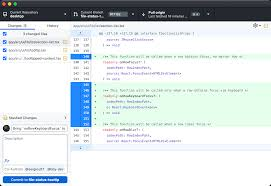
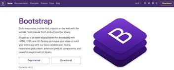
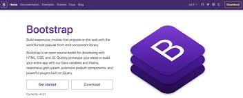
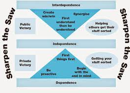
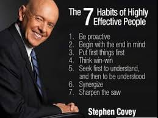

WEEK : 2
GIT
Is a popular version for version system,created by Linus
Repository management: Create and manage repositories (repos) to store and version control project files.
- Version control: Use Git, an open-source version control system, to track changes and collaborate on code development.
- Collaboration: Invite others to contribute to repositories, assign tasks, and track progress.
- Code review: Review and discuss code changes with others before they are merged into the main project.
- Project management: Organize tasks, assign deadlines, and track project progress.
- Community features: Explore open-source projects, connect with other developers, and showcase work to potential employers.
- Integration: Integrate with other development tools and services, such as GitHub Actions, GitHub Codespaces, and GitHub Copilot.

.jpg)
BOOTSTRAP
Bootstrap is a popular front-end framework used for building responsive, mobile-first web applications. It provides a set of pre-designed CSS and HTML templates, as well as JavaScript plugins, to help developers quickly create consistent and visually appealing interfaces.
Some of the key features of Bootstrap include:
1. Responsive design: Bootstrap's grid system and CSS classes make it easy to create layouts that adapt to different screen sizes and devices.
2. Pre-built components: Bootstrap includes a range of pre-designed UI components, such as navigation bars, alerts, and modal windows.
3. Customizable: Bootstrap allows developers to customize the look and feel of their applications using a range of variables and CSS overrides.
4. Extensive community: Bootstrap has a large and active community of developers who contribute to its development and provide support.
.jpg) 

LEADERSHIP AND PERSONAL DEVELOPMENT
FACILITATOR:NALUBEGA JULIA
week 1 & 2:
7 HABITS OF EFFECTIVENESSS
Habit 1: Be Proactive - Taking initiative and responsibility for one's actions.
- Habit 2: Begin with the End in Mind - Defining one's values and goals before taking action.
- Habit 3: Put First Things First - Prioritizing and focusing on important tasks.
- Habit 4: Think Win-Win - Cultivating a mindset of mutual benefit and collaboration.
- Habit 5: Seek First to Understand, Then to Be Understood - Listening actively before communicating.
- Habit 6: Synergize - Working effectively with others to create solutions greater than the sum of individual efforts.
- Habit 7: Sharpen the Saw - Continuous self-improvement and renewal in the physical, mental, emotional, and spiritual aspects.

.jpg)
